Visual Effects on Images¶
Setup & Test Examples¶
Let us import the relevant libraries and read a few images to play with.
[1]:
import numpy as np
import cv2
from cr import vision
%matplotlib inline
watch = cv2.imread('../../data/images/pocket_watch.jpg')
mountain = cv2.imread('../../data/images/mountain.png')
roses = cv2.imread('../../data/images/roses.jpg')
fighter_jet = cv2.imread('../../data/images/fighter_jet.jpg')
barbara = cv2.imread('../../data/images/barbara.png', 0)
puppy = cv2.imread('../../data/images/puppy.jpg')
[2]:
vision.imshow_multiple_in_row(watch, mountain, roses, fighter_jet, barbara, puppy)
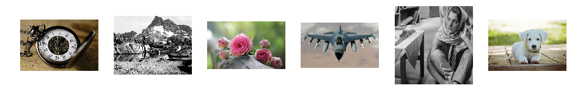
Mirroring Left to Right¶
[3]:
image_modified = vision.effects.mirror_lr(watch)
vision.imshow_multiple_in_row(watch, image_modified)
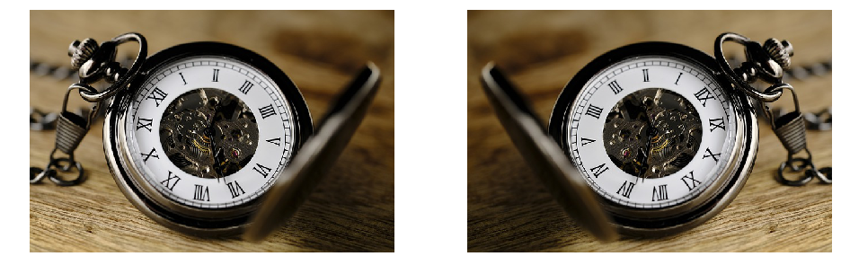
Mirroring Up to Down¶
[4]:
image_modified = vision.effects.mirror_ud(watch)
vision.imshow_multiple_in_row(watch, image_modified)
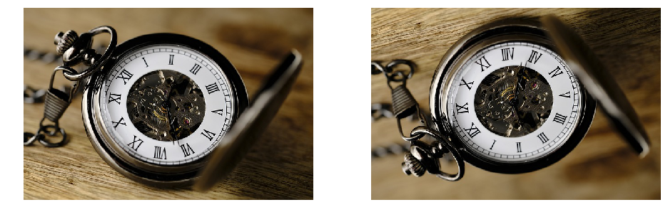
Mirroring Diagonally¶
[5]:
image_modified = vision.effects.mirror_x(watch)
vision.imshow_multiple_in_row(watch, image_modified)
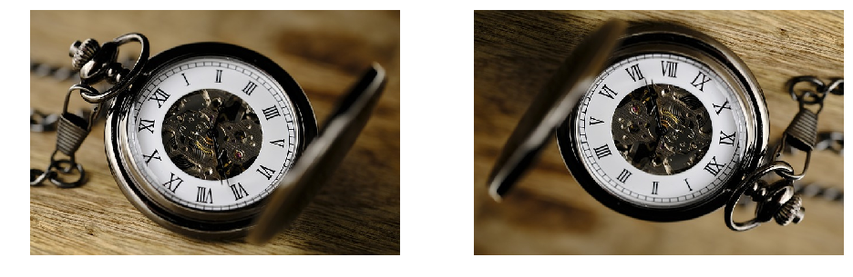
Selecting Red Channel¶
[6]:
image_modified = vision.effects.select_red(watch)
vision.imshow_multiple_in_row(watch, image_modified)
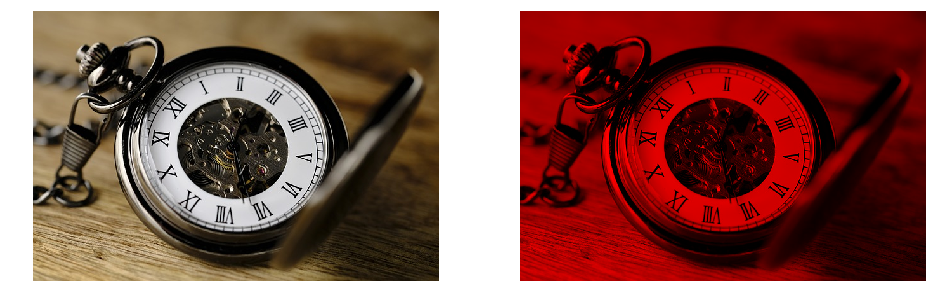
[7]:
image_modified = vision.effects.select_red(watch, 50)
vision.imshow_multiple_in_row(watch, image_modified)
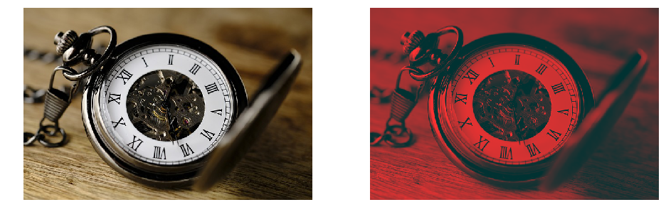
Selecting Green Channel¶
[8]:
image_modified = vision.effects.select_green(watch)
vision.imshow_multiple_in_row(watch, image_modified)
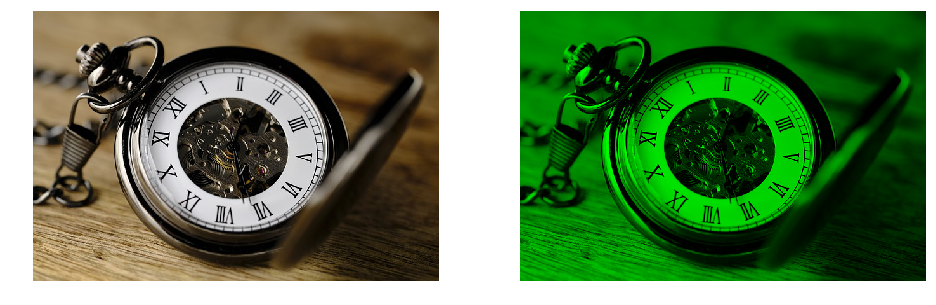
[9]:
image_modified = vision.effects.select_green(watch, 50)
vision.imshow_multiple_in_row(watch, image_modified)
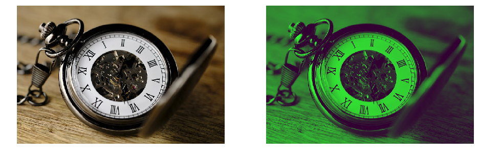
Selecting Blue Channel¶
[10]:
image_modified = vision.effects.select_blue(watch)
vision.imshow_multiple_in_row(watch, image_modified)
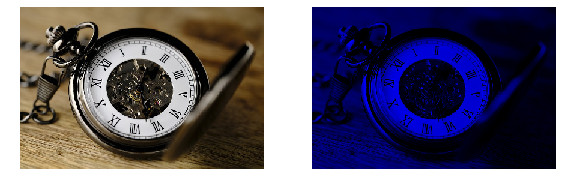
[11]:
image_modified = vision.effects.select_blue(watch, 50)
vision.imshow_multiple_in_row(watch, image_modified)
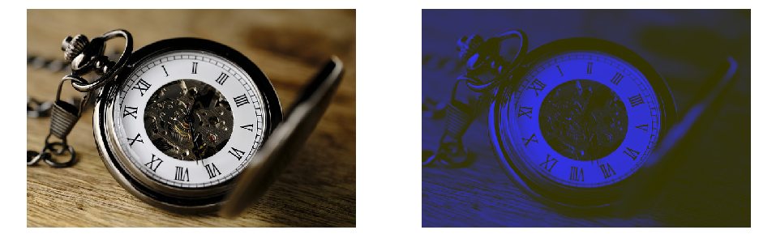
Monochrome Image¶
[12]:
image_modified = vision.effects.monochrome(watch)
vision.imshow_multiple_in_row(watch, image_modified)
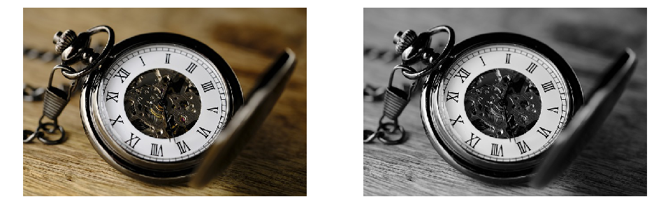
Embossing¶
[13]:
image_modified = vision.effects.emboss(fighter_jet)
vision.imshow_multiple_in_row(fighter_jet, image_modified)
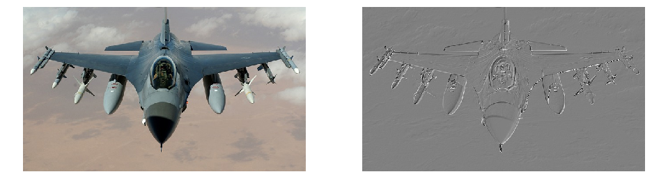
[14]:
image_modified = vision.effects.emboss(mountain, method='SW')
vision.imshow_multiple_in_row(mountain, image_modified)
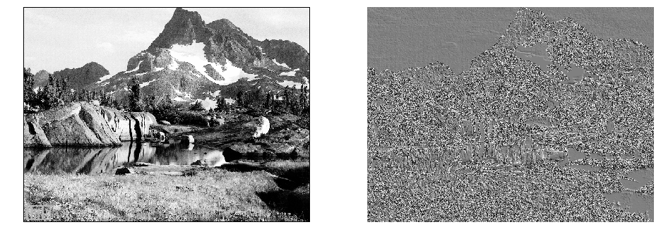
[15]:
image_modified = vision.effects.emboss(watch, method='NE')
vision.imshow_multiple_in_row(watch, image_modified)
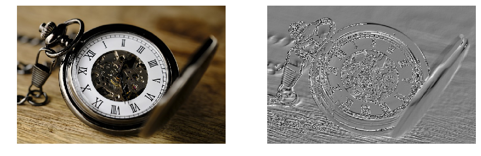
[16]:
image_modified = vision.effects.emboss(mountain, method='NW')
vision.imshow_multiple_in_row(mountain, image_modified)
Motion Blur¶
[17]:
image_modified = vision.effects.motion_blur(mountain, kernel_size=15)
vision.imshow_multiple_in_row(mountain, image_modified)
[18]:
image_modified = vision.effects.motion_blur(watch, kernel_size=15, horz=False)
vision.imshow_multiple_in_row(watch, image_modified)
Sharpening¶
[19]:
image_modified = vision.effects.sharpen(roses)
differerence = vision.abs_uint8(vision.signed_subtract(roses, image_modified))
vision.imshow_multiple_in_row(roses, image_modified, differerence)
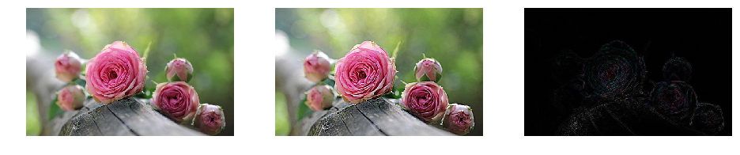
Vignette¶
[20]:
image_modified = vision.effects.vignette(watch, 150)
vision.imshow_multiple_in_row(watch, image_modified)
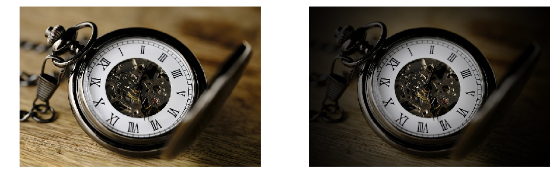
[21]:
image_modified = vision.effects.vignette(barbara, 120)
vision.imshow_multiple_in_row(barbara, image_modified)
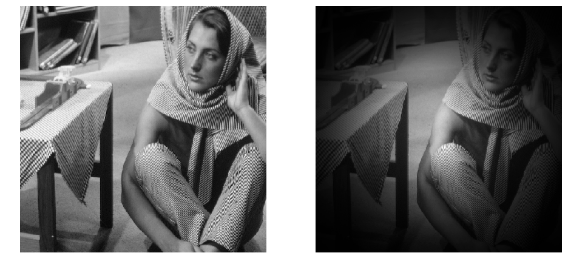
[22]:
image_modified = vision.effects.vignette(puppy, 100)
vision.imshow_multiple_in_row(puppy, image_modified)
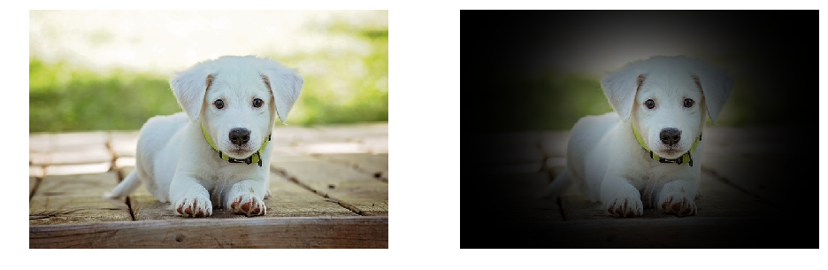
[23]:
image_modified = vision.effects.enhance_contrast(watch)
vision.imshow_multiple_in_row(watch, image_modified)
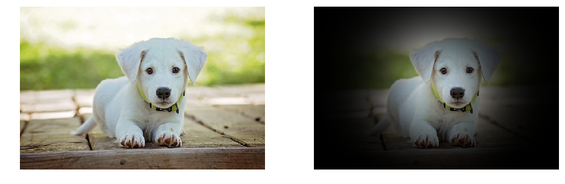
Cartoon¶
[24]:
image_modified = vision.effects.cartoonize(puppy)
vision.imshow_multiple_in_row(puppy, image_modified)
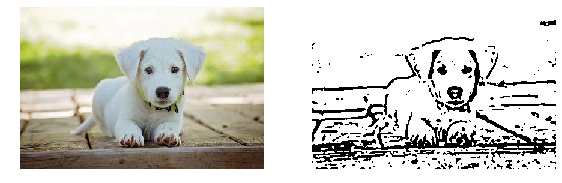
Pixelization¶
[25]:
image_modified = vision.effects.pixelize(puppy, 16)
vision.imshow_multiple_in_row(puppy, image_modified)
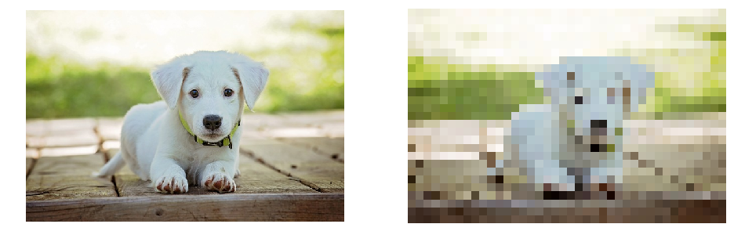
Sepia¶
[26]:
image_modified = vision.effects.sepia(puppy)
vision.imshow_multiple_in_row(puppy, image_modified)
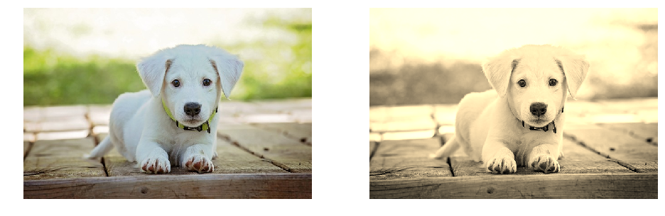
Contour¶
[27]:
image_modified = vision.effects.contour(puppy)
vision.imshow_multiple_in_row(puppy, image_modified)
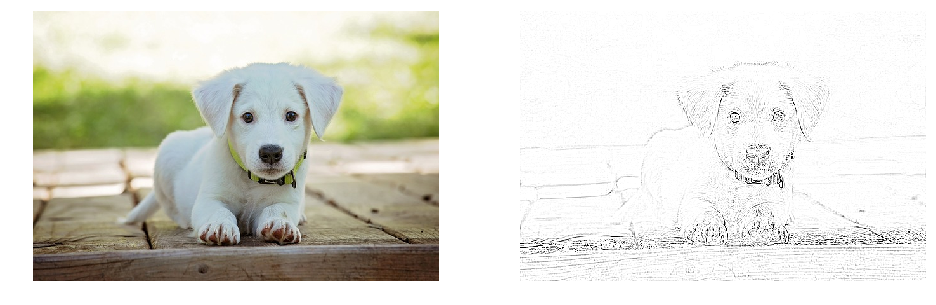
3d embossing¶
[28]:
image_modified = vision.effects.emboss3d(roses, depth=20)
vision.imshow_multiple_in_row(roses, image_modified)
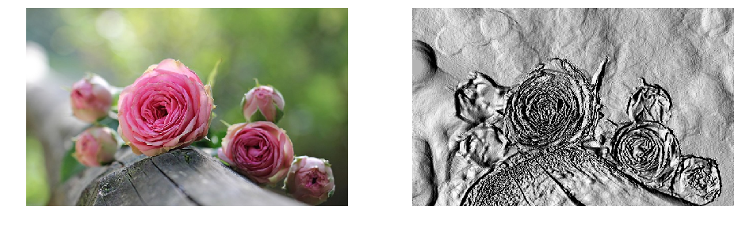